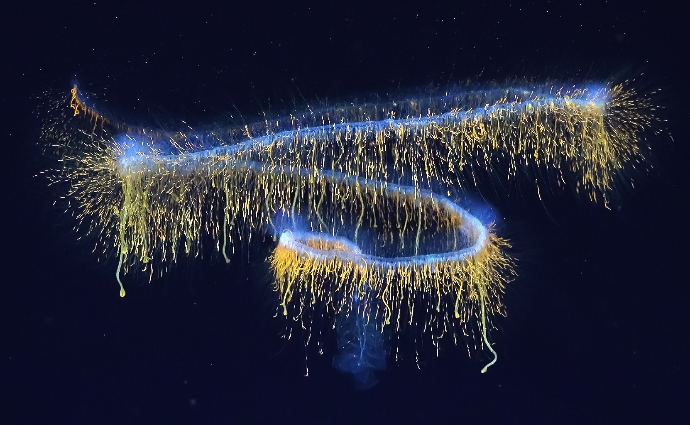
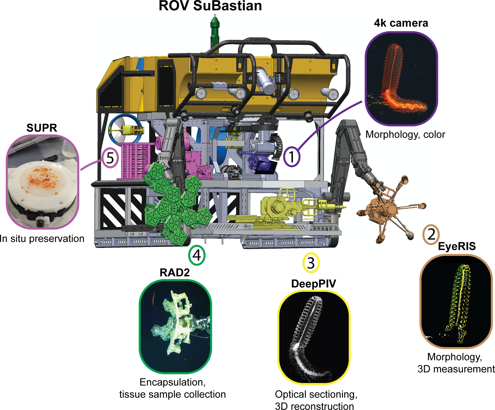
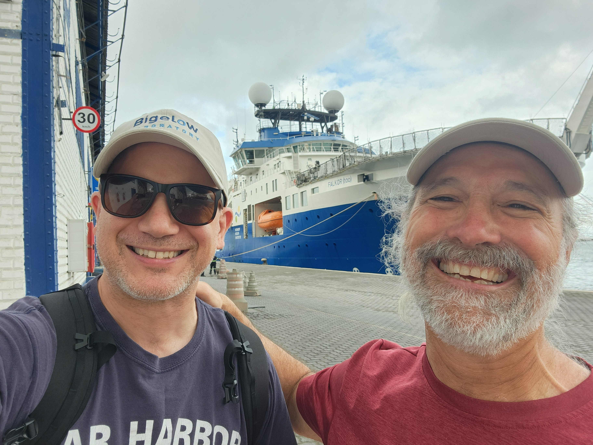
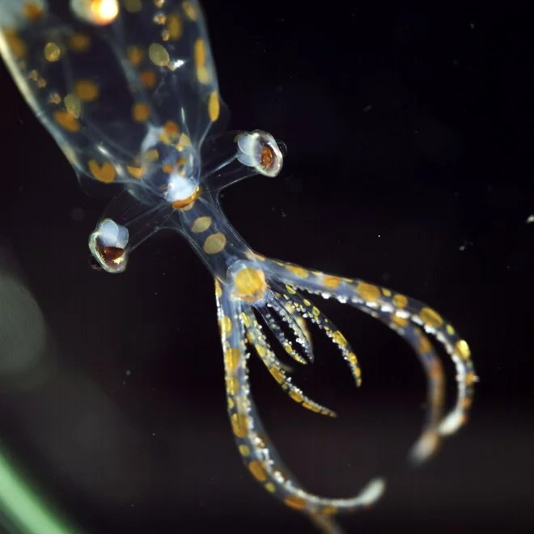
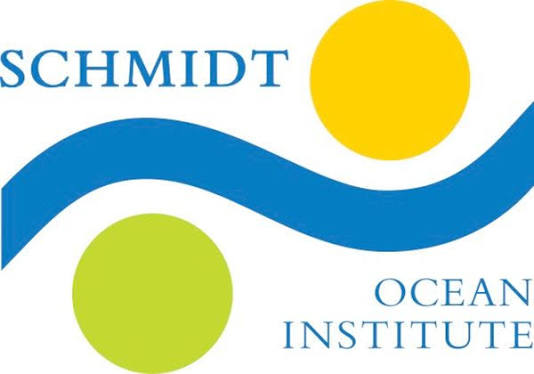

Ocean Exploration, Innovation, and Discovery

Much of the gelatinous life in the deep ocean has never been described. Collection damages these animals. We are building tools and methods to record them in the water, intact, with minimal disturbance.
The problem
The ocean’s midwater, below the surface and above the seafloor, is the one of the largest contiguous ecosystems on Earth and among the least explored. Much of it is occupied by gelatinous animals: jellyfish, ctenophores, salps, siphonophores, pelagic polychaetes. Estimates suggest that between 35 and 65 percent of gelatinous zooplankton species are poorly described or entirely unknown.
They are hard to study because they are hard to keep. Trawl nets can destroy soft tissue on the way up, and what preservation in ethanol or formalin leaves behind can degrade past usefulness within a few years. Genomic data for these groups barely exist.
The approach

We use a strategy we call digital synthesis: assembling enough high-resolution digital information from a single in-situ encounter to formally describe a new species without keeping the animal.
A digital voucher combines quantitative imaging with plenoptic cameras, 3D optical sectioning using laser light-sheet imaging to resolve internal and external structure, and transcriptome and whole-genome sequencing to address function, evolution, and cryptic diversity. Because the voucher is data, it can be shared globally by download rather than by shipping a physical holotype across borders, which is one of the slower steps in describing a new species.
Where it stands

The strategy was first deployed on Designing the Future 2 in 2021, which produced the method and data papers below. We returned in April and May of 2026 aboard R/V Falkor (too) for Designing the Future 3, working the midwater between Salvador and Fortaleza, Brazil, with chief scientist Karen Osborn of the Smithsonian.

That cruise turned up 31 species new to science. I gave a public talk on the expedition at Bigelow in August 2026.
People
John A. Burns, Bigelow Laboratory for Ocean Sciences, leads the project.
- Kakani Katija, Principal Engineer and lead of the Bioinspiration Lab, Monterey Bay Aquarium Research Institute. In-situ imaging and 3D reconstruction.
- Robert J. Wood, Harry Lewis and Marlyn McGrath Professor of Engineering and Applied Sciences, Harvard Microrobotics Laboratory, Harvard University. Soft robotics for delicate manipulation and biopsy.
- Brennan Phillips, Associate Professor of Ocean Engineering, University of Rhode Island. Underwater instrumentation and sampling systems.
- David Gruber, Distinguished Professor of Biology, Baruch College, City University of New York.
- Dhugal Lindsay, Senior Research Engineer, Japan Agency for Marine-Earth Science and Technology. Taxonomy, novel camera systems, and species descriptions.
Support

This work is supported by an Ocean Shot Award from the Ocean Policy Research Institute arm of the Sasakawa Peace Foundation.

Ship time aboard the R/V Falkor (too) was provided by the Schmidt Ocean Institute.
- Ocean Shot award propels discovery through innovation Bigelow Laboratory, 2025